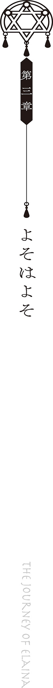

平原を進んだ先にその国はありました。
大きな壁がそびえ、入り口には門兵が一人、立っております。門兵はゆるりとほうきを飛ばしてきた私に気付くと敬礼を一つしたのちに、
「やあようこそおいでなさいました、魔女様。こちらは西の都でございます」
とご挨拶を一つ。それから門兵さんは紙とペンを手に取り、「本日は観光ですか？ お仕事ですか？」と簡単な入国審査を始めました。
旅の目的や年齢、性別に名前に職業等々諸々、私は聞かれたことを端的に一つひとつ答えていきます。
やがて入国審査が終わると門兵さんは「確認しました──ところで魔女様、我が国には注意事項がいくつかありまして、よその国の方には必ずこの紙をお渡しすることになっています」などと言いながら、紙切れを一つ、私の手に渡してきました。
細かい文字がびっしりと綴られています。読む気が一瞬で失せるほどの注意事項の数々でした。
「こちらの注意事項を遵守して、我が国の観光をお楽しみください」そして門兵さんは、私の前から退きます。
さあさあどうぞお入りなさい。と言いたいのでしょう。
「どうも」
私はぺこりと首を垂れてから、門をくぐりました。
「我が先進国での観光をどうぞお楽しみくださいませ！ 魔女様！」
そのような言葉を背中に受けながら。
「…………」
先進国ってわざわざ自称するようなものでしたっけ？
さて先進国と自称するからには、たとえば壁のように佇んでいる城壁の向こうには未だかつて見たことがないくらいに素晴らしい街並みが広がっているのかと私はやや期待していたのですけれど。
しかし大通りに並ぶ建物たちは、白い壁、黒い屋根といったモノトーン調あるいは古風な佇まいを見せるばかりで、先進国らしさは見受けられません。
ならば街の人々の暮らしが先進国らしさにありふれているのでしょうか？ 石畳を歩きながら私はやはり期待に胸を膨らませていたものなのですが、しかし大通りを往来するのはいたって普通の住民ばかり。
馬車を引く商人の姿や、露店には新鮮な魚やお肉などが並んでおりましたが、そのような光景はおおよそよその国でも見受けられるものばかり。
要するにこの国にしかないようなものがまるでなかったのです。
これはつまるところ、
「……普通の国じゃないですか」
というほかありません。
入国すれば分かるなどと思わせぶりな台詞に惑わされて入って目にしたものはただのごくごく普通にありふれた国の日常でした。
「…………」
もしかして大通りを歩いただけでは分からない、ということなのでしょうか？
私はそれから街のあちこちを散策しました。入れば分かると言われたもののいまいちピンとこなかったために、こうなっては意地でも西の都が先進国たりえる確信を摑んでみようと躍起になっていたのです。
手始めにレストランに入りました。
「いらっしゃいませ！ お客様は一名様ですか？」私が頷くと、店員さんは「当店は全席禁煙となっております。ご了承ください」と付け足してから、店内を案内しました。
さて料理はどうだったのかといえばこれまた普通なお料理が私を待ち受けておりました。
「どうです？ この国の料理はとっても美味しいでしょう」
強いて言うならば、この国ではあまり見かけない格好をしている私に対して店員さんがやたらとぐいぐいとこの国の料理の美味しさを説いていたことくらいでしょうか。
「この辺りでここまで美味しい料理が食べられるのはうちくらいなものですよ。よその料理は食べられたものじゃありません。どうしてだか分かりますか？」
「いえ……」何でです？ と私が首をかしげると、店員さんは、
「うちの国の料理はすべてこの国原産の材料を使っているのです！ だからとっても美味しくて、身体にいいんですよ！ さあ、どんどん食べてくださいね！」
「あ、はあ……」店員さんの目の前だと食べづらいんですけど……。
「ちなみに近くにある東の都では国外から輸入した材料ばかりを使っているようでしてね、あちらの国の料理はとても食べられたものじゃありません！ 最低です！」
それからひとしきり我が国賛美トークを聞かされながら、私は食事を嗜みました。
ちなみにレストランで出された食事はまあまあ美味しゅうございました。
素晴らしき先進国の料理と呼ぶほど美味しかったかと聞かれるとコメントに困ってしまいますが。
この国はどうやらお近くにある後進国と揉めているのか、それとも単純に敵視をしておられるのか、事あるごとに後進国とやらと比較をする性分を持っているようです。
「やあ魔女さん。うちの本屋の品揃え、どうだい？」たとえば本屋で私が暇つぶしをしていたときは、店主のおじいさんがこのように話しかけてきました。「うちの国の本屋では暴力描写があったり、性的な描写があるものの一切の販売を禁じているんだ。有害図書だからね」
では何が置いてあるのかと思ってみて見れば、小難しい学術書や、哲学書の類ばかり。
「本は勉強をするためのものだよ。娯楽のために本を読むなんて低俗だ。まあ、東のほうには、そういう本を多く扱っている国があるそうだがね」
などと。
この国はどうやら禁止事項がそれなりに多いようでした。
「我が国では飲酒は禁じられている！」たとえばこの国にてお酒を飲みながら歩いていた商人が、道端で兵士さんにきつく叱られていました。「酒は自我を失わせる悪魔の飲み物だ！ これは没収させてもらうぞ！」
「ちょ、ちょっと待ってくれよ！」商人さんは食い下がりました。「酒の持ち込みが禁止なんて聞いたことねえよ……！ よその国では普通に持ち込みを許可してくれるのに──」
「よそはよそ！ 我が国では酒類の一切は禁止だ！ 罰金として銅貨五枚を支払ってもらう！」
聞く耳持たずとはまさにこのことで、兵士さんは一方的にお酒とお金を奪い取って、去って行ってしまいました。
この辺りで私は門兵さんに渡された紙切れのことを思い出しました。とっとと国に入りたかったゆえにろくに読みもせずにポケットにしまってしまいましたけれど──。
「…………」
どうやら、この国は禁止事項がとてもとても多いようでした。
『国内での飲酒禁止。国外から肉・野菜・魚などの生ものの持ち込み禁止。食べ歩き禁止。路上でのパフォーマンス禁止。有害図書の持ち込み禁止。生き物の持ち込み禁止。……月光花の喫煙禁止。ワースタムの持ち込み禁止』
などなど。
禁止事項の多さもさることながら、破った際の罰金も中々の金額でした。禁止された食べ物などの持ち込みは銅貨五枚。それから銀貨一枚、銀貨五枚などと、禁止事項を破った際の罰金は跳ね上がっていきます。
その中でもっとも重い罰金を下されるものは二つ。
ワースタムの持ち込みと、月光花の持ち込みには金貨五枚がそれぞれ支払わされることになっているようです。
どちらも聞き覚えのない名前でした。
はてさてこの二つは一体何でしょう？
「あの、すみません」というわけで私はその辺に歩いていた通行人を捕まえて、紙切れを押し付けました。「ここに書いてあるワースタムと月光花って一体何です？」
恐らく散歩中だったのでしょう。通行人のおじさんは親切にも立ち止まり、「おやおや。旅人さんかね？」などと笑い、「どれどれ」と紙切れを見やりました。
「ワースタムはこの辺りの地域に生息する害獣だな」
「ほうほう。一体どんな生き物なんです？」
「足が八本生えていて、顔は猪。ちなみにワースタムはこの辺りの国の言葉で『腐れ豚野郎』という意味だ」
「ひどい名前ですね」
「ひどい生き物でもあるぞ」おじさんは言いました。「このワースタムはとにかく食欲旺盛でね、基本的に何でも食べてしまうのだよ。農場を荒らしたり、家畜用の牧草とか、それと腐った肉も食べる。家畜に嚙み付くこともあるな。牙には毒があるから嚙まれた家畜は大体死ぬ」
「あらまあ」なるほど害獣扱いを受けるのも納得の凶悪ぶりでした。
「……だが東の後進国ではこのワースタムをどういうわけか高値で買い取っているらしくてなぁ……、そのせいで、うちの国でも買い取ってくれるんじゃないかと勘違いした商人が、たまに持ち込んでくるそうだ」
まったく、後進国のせいで我が国がどれだけ迷惑を被っていることか……、などとぶつぶつと文句をぼやくおじさんでした。
ワースタムとやらに関してはおおよそ分かったところで、私は、
「それではこの月光花というのは？」
と尋ねます。
すると彼は、「ああ」と頷き、
「それなら、あれのことだな」
と道の向こうを指差します。
「…………」
そこには先ほどお酒を没収された商人さんがおりました。
「くそっ……やってらんねぇよ……まったく……」ぶつぶつと不満を漏らしながら、彼は馬車にもたれ、火のついた筒を口に添えます。
すぱー、と白い煙が彼の口から吐き出されました。
直後に「なんてことを！」とおじさんは顔をしかめて口をハンカチで覆います。
「……あれは、月光花を乾燥させてできた煙草だ」彼はもごもごとくぐもった声を漏らします。「とても危険なものだから、煙を吸い込まないように注意したほうがいい。我が国の研究で分かったことだが、あの月光花には幻覚作用と中毒性があるらしい。つまり危険薬物だ！」
「幻覚作用と中毒性ですか」やべー花じゃないですか。
口を覆った私でした。彼と同様にもごもごしながら、私は、
「要するに麻薬ということですよね」と簡単にまとめました。
「正確には麻薬と煙草の中間だな」もごもごとおじさんは言います。「ちなみにあの男が吐く煙よりも、筒の先から伸びている煙のほうがよほど有害だから気を付けたほうがいい。月光花は吸っている人間よりも周りの人間に害を及ぼすから固く禁止されているのだよ」
ということは周りの人間が幻覚を見せられてしまう、ということでしょうか？
私はより一層に口を覆いました。煙草は嫌いなのです。
「まったく馬鹿な男だ。こんな大通りで月光花なんて吸ったら──」
眉をひそめながら、おじさんが言いかけた頃でした。
「こらぁ！ こんな道の真ん中で何を吸って──ってまた貴様かぁ！」
先ほどの兵士さんが恐ろしい形相で戻ってきました。心なしか先ほどより気迫は割増されているようにも見えました。
「は？ 噓だろ？ 月光花もダメなのかよ？」どうやら彼は先ほどまでの私と同様に入国の際に渡された紙切れをろくに読んでおられなかったようです。
「ふざけやがって！ ちょっと来い！」
即座に月光花を奪い取り、兵士さんは商人さんの首根っこを摑みました。
「ちょっ……！ ちょっとまてよ！ だって東の国では月光花を吸っててもオッケーだったし、そもそも栽培してるし──」
「よそはよそだ！ 我が国ではこれは禁止薬物だ！ 貴様、まだ何か隠していないだろうな？」兵士さんは彼の馬車に目をやると、「中を見せてみろ！」などと言いながら馬車に乗り込みました。
直後。
「貴様あ！ これはワースタムではないか！ 禁止薬物だけに飽き足らず持ち込み禁止の動物までこの国に入れているとは！ けしからん！ ちょっと来い！」
ぐい、と商人さんを連れて、そのまま兵士さんは道の向こうへと消えてしまいました。
「…………」一連のやり取りを眺めながら、私は紙切れをそっと仕舞います。「……だいたいわかりました。どうも」
当然ながら物事が禁止されているのにはれっきとした理由があるようです。
「今あの男も言っていたが、近くにある東の都ではああいった月光花の栽培が許されているらしいのだよ」まったく──と顔をしかめて、おじさんは言います。「後進国はこれだから困る。あの花の危険性に気付かず嗜好品として使い続けているのだからな」
つまるところ先進国と自称するということは、それだけ、比較できるだけ遅れている国がある、ということなのでしょう。
ひとしきり観光を終えたあとで、私は西の都を離れることとなりました。
その折りに入国したときと同じ門兵さんと再会したのですが、
「おや魔女様。如何でしたか、我が国は」
出国の手続きをしている際に、門兵さんは私を見やりました。「ルールが徹底されているおかげで国民に安心で安全な暮らしが約束されているこの国はまさに先進国と呼ぶにふさわしい。そう思いませんか」
「…………」
まあ、そのような見方もできなくはありませんけれども。
それはつまるところ、言い換えると、
「文字通り臭いものに蓋をしているだけのようにも見えましたけれど」とも言えました。
私の言葉に門兵さんは笑います。
「素晴らしいではないですか。臭いものと無縁でいられるのですから」
○
西の都を出た私は、それからすぐにほうきを東に向かって飛ばしました。
あそこまで徹底して比較されてしまっては流石に気にもなるもので、西の都の彼らが嫌悪──あるいは後進国と罵る東の都がどれほど遅れた国なのか気になったのです。
興味に惹かれるのも、面白そうなものに惹かれるのも旅人の性分なものですから。
東に向かって真っすぐ延々とほうきを進めました。正確な位置などは特に調べることはありませんでしたが、そこそこの速さでほうきを飛ばし続けて数時間程度で、国の姿が遠巻きに見えるようになりました。
同時に、恐らくは国の壁の外で栽培している花畑も、見えるようになりました。
それはそれは美しい花畑でした。
真っ白い花が延々と遠くまで広がっています。足元が白に埋め尽くされ、ほうきの風にあおられて、花たちは首を揺らしていました。
「…………」
恐らくは進むべき先にある国が、東の都でしょう。
白い花からほのかに漂う香りは、くせになってしまいそうなくらいに、いい香りでしたから。
国の門まで行くと、門兵さんの姿は見当たらず、代わりにお役人さんが立っていました。
入国の手続きはこの国では役人さんが行っているのでしょうか？ 私はほうきから降りて、役人さんに一つお辞儀をしたのち、
「こんにちは。旅の魔女イレイナと申します──」
入国したいんですけど、どうすればいいですか？ と首をかしげました。
役人さんは「ああ、これはどうも」と軽く私にお辞儀を返したのち、
「我が国では入国の審査は執り行っていませんから、お好きに入っていただいて結構ですよ」と答えました。
ほうほう入国審査がないとは？
「立ち仕事の入国審査などこのご時世、時代遅れもいいところですよ。我が国では城壁の上から兵士たちが見守っていますから、ここまで来ることができた、ということはあなたは問題ないと判断されたということなのでしょう」
役人さんは言いながら門を見上げます。その上から兵士さんがこちらに手を振っているのが見えました。
なるほどなるほど。しかし、
「でしたらあなたは何を？」
私は再び首をかしげます。お見受けしたところ時代遅れな立ち仕事の真似事をしているように見えたものでしたから。
彼は淡々と答えました。
「商人を待っています。本日、ワースタムを我が国に届けてくれる約束だったのですが……、どうやら遅れているようでして」
ワースタム。
「害獣ですよね、確か」
そういえば西の都でワースタムを持ち込んだ商人が兵士さんにしょっ引かれていましたけど……。
もしやアレでは？
「おや」役人さんは私を見やりながら、少し驚いた表情を浮かべていました。「もしかして旅人さん、今日は西の都から来られたのですか？」
「……よく分かりましたね」
「あの国ではワースタムを害獣扱いしている節がありますからね」
「…………？」
その口ぶりからするとワースタムは害獣ではない、ということになるのですけれど。
これは一体どういうことでしょう？
「アレは見かけこそ醜く、気性も荒く、牙には毒を持っているものですけれども──けれど、あれの肝は中々の美味でしてね、我が国では珍味として愛されているのですよ。まあ向こうの連中はそれも知らずただの害獣として駆除しているようですが……」
「…………」
害獣であるところのワースタムをわりと高値で買い取る東の都。西の都ではこの国の考えていることはよく分からない──などと言われていましたけれども。
なるほど当然ながら高値で買われていることには相応の理由が含まれているようです。
「ところで魔女様。あの国では未だに月光花の持ち込みも禁じられているのですか？」言いながら役人さんは、胸ポケットからひとつ筒を取り出しました。
商人さんが持っていたものと同じもの──おそらく月光花です。
「……ええ、まあ」役人さんが筒に火をつけたと同時に一歩下がった私でした。
「おっと……すみません。国内ではあまり吸う機会がないものですからね──今や禁煙ブームですから、門の外くらいでしか自由に吸う機会がないのですよ」
と言いながらも、役人さんは紫煙を吐き出しました。
「…………？」しかしそれは商人さんの言葉とは相反するものでした。「この国では月光花は禁じられていないはずでは？」
「おや西の都ではそのように言っていたんですか？」役人さんは笑いました。「乾燥させた月光花を詰めたこの煙草は百害あって一利なしの嗜好品ですから、我が国でも取り締まりをしていますよ。場所と時間を区切られていますから、喫煙者は皆肩身の狭い思いをしていますよ」
私みたいにね、と彼は言いました。同時に、
「ですが月光花自体には害はありません」
とも。私の背中の向こうにある花畑に目をやりながら、彼は、「ご存じですか？ 月光花は上手く扱えば難病治療に対する特効薬にもなり得るのです。乾燥させれば麻薬に近い煙草になりますし、けれど、すり潰して使えば、今まで不治の病だと思われていた病気を快復に向かわせることができるそうで──そのような研究結果が、我が国では近頃出たのです」
「…………」
ですからやたらと栽培しているわけですか。
私はてっきりこの国は月光花に溺れた方たちばかりが集う危なっかしい国だとばかり思っていたのですけれど。
「つまり月光花は毒にも薬にもなり得る無限の可能性を秘めているわけです。西の都の連中はそれも知らずに持ち込みを禁じていますけれどね──」
臭いモノに蓋をする性分の西の都ですから、きっと月光花が有効利用できるなどという事実を知るのにはまだ時間がかかることでしょう。
いえ、月光花だけではなく──ワースタムの肝が実は美味しかったりする事実に関しても同様で、彼らは結局のところ、禁止するだけで目を背けるばかりに、別の使い道があることを思いつく機会を自ら失ってしまっているのでしょう。
それは嘆かわしいことで、あるいは惜しいことでもあるように思えてしまいました。
「向こうの国の方々に、そのことを教えて差し上げないんですか？」
すると役人さんは笑い、
「教えるだなんてとんでもない」
そして、言いました。
「よそはよそ、ですよ」